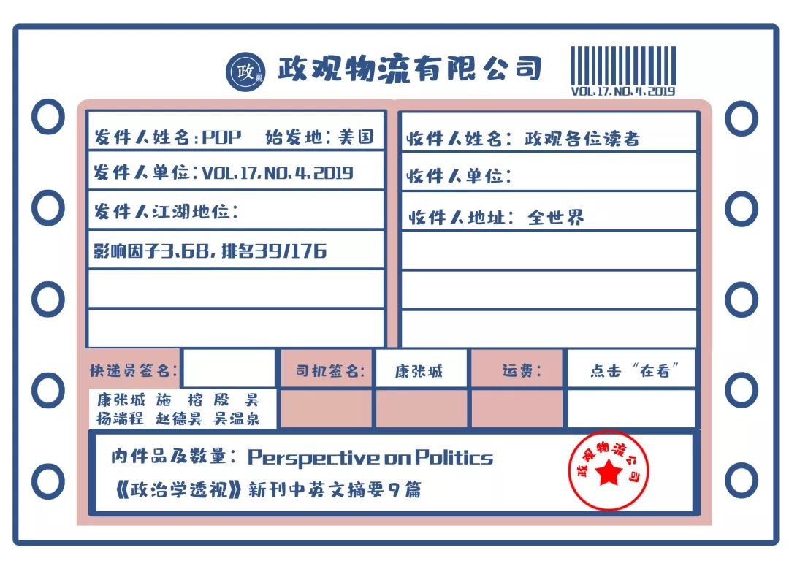
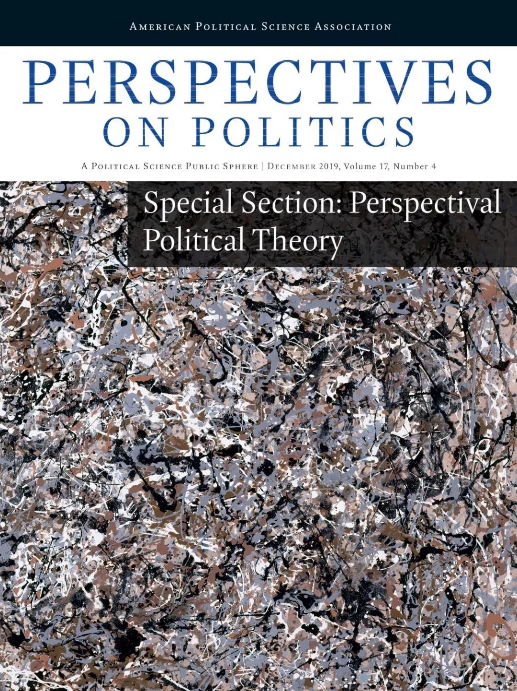

收录于合集
期刊简介： 《政治透视》（Perspective on Politics）是美国政治学会（American Political Science Association）旗下的知名季刊。自2003年创刊并由剑桥大学出版社出版以来，其为政治学共同体内部以及政治学学科与广大读者之间提供了广阔并且具有综合性的讨论平台。根据Journal Citation Reports显示，其2018年的影响因子为3.680，在176种政治科学类期刊中位列第39位（39/176）。

期刊目录
1. 对警察杀人的补偿
2. 选举和竞争的对抗伦理
3. 反对僵尸民主：认知中重复计算的危险
4. 作为一种次要的、理性的乌托邦式和平：基于预示性的和证实性的和平主义
5. 应对气候变化的《巴黎协定》——由美国制造吗？
6. “我不是美国黑人的总统”：修辞与政策代表
7. 内部的利益集团：公共养老基金的管理
8. 谁统治世界？全球领导阶层的肖像
9. 国际关系研究中的国家建设经验

1. 对警察杀人的补偿
题目： Reparations for Police Killing
作者： Jennifer Page, 苏黎世大学伦理中心博士后
摘要： 在美国，发生警察枪击杀人之后，市政官员与警察往往通过司法的眼光看待死者家属。如果家属提起诉讼，政府与警方部门认为他们有为自己辩护并将原告视为对手的法定权利。然而，补偿与“补偿公正”的概念允许公共权力以道德而非法律的概念来框定警察杀人的问题。警员若射杀一名无罪的人，他应当为死者家属提供经济补偿、道歉以及其他补救措施。为了论证这一观点，本文从正当防卫理论中提出了非责任呼吁这一哲学解释。在警察射杀无罪者后，补偿提供了法律诉讼之外的一种非对抗性选择。而在警员采取合理行动的案例中，“制度性的代理人追悔”应代替道德责任，成为补偿的基础。通过本文，作者提出，无论警察射杀一名无罪的黑人，还是在民事诉讼程序中官员对这一黑人死者的家属的冷漠对待，都是明显的种族歧视。
After a fatal police shooting in the United States, it is typical for city and police officials to view the family of the deceased through the lens of the law. If the family files a lawsuit, the city and police department consider it their legal right to defend themselves and to treat the plaintiffs as adversaries. However, reparations and the concept of “reparative justice” allow authorities to frame police killings in moral rather than legal terms. When a police officer kills a person who was not liable to this outcome, officials should offer monetary reparations, an apology, and other redress measures to the victim’s family. To make this argument, the article presents a philosophical account of non-liability hailing from self-defense theory, centering the distinction between reasonableness and liability. Reparations provide a non-adversarial alternative to civil litigation after a non-liable person has been killed by a police officer. In cases where the officer nevertheless acted reasonably, “institutional agent-regret” rather than moral responsibility grounds the argument for reparations. Throughout the article, it is argued that there are distinct racial wrongs both when police kill a non-liable black person and when family members of a black victim are treated poorly by officials in the civil litigation process.
2. 选举和竞争的对抗伦理
题目： An Adversarial Ethics for Campaigns and Elections
作者： Samuel Bagg, 牛津大学政治学博士后；Isak Tranvik，杜克大学政治学博士生
摘要： 目前关于竞选伦理的研究路径未能充分解释，在无法有效制裁破坏性行为的情况下，被竞争逻辑所激发的“斗争竞赛”。通过建议严格遵守不可强制实行的诚实准则，目前的研究路径迫使合乎道德的候选人要么退出，要么竞选失败。为了更好地理解候选人面临的复杂困境，作者首先转向“对抗伦理”的传统，其目的是使合乎道德的候选人参选，同时防止最具破坏性的过度竞争。然而，正如本文所表明的那样，相比于其他对抗性环境，选举带来了更难应对的挑战，因为没有中央管制来制止潜在的“斗争竞赛”。在谈到最近关于民粹主义和党派偏见的学术成果时，本文阐述了竞选伦理的另一个框架，它允许候选人在争取民主派民众时有更大的调整空间，同时要求候选人遵守社会和政治多元化的准则。
Existing approaches to campaign ethics fail to adequately account for the “arms races” incited by competitive incentives in the absence of effective sanctions for destructive behaviors. By recommending scrupulous devotion to unenforceable norms of honesty, these approaches require ethical candidates either to quit or lose. To better understand the complex dilemmas faced by candidates, therefore, we turn first to the tradition of “adversarial ethics,” which aims to enable ethical participants to compete while preventing the most destructive excesses of competition. As we demonstrate, however, elections present even more difficult challenges than other adversarial contexts, because no centralized regulation is available to halt potential arms races. Turning next to recent scholarship on populism and partisanship, we articulate an alternative framework for campaign ethics, which allows candidates greater room to maneuver in their appeals to democratic populations while nevertheless requiring adherence to norms of social and political pluralism.
3.反对僵尸民主：认知中重复计算的危险
题目： Against Bot Democracy: The Dangers of Epistemic Double-Counting
作者： Ana Tanasoca，堪培拉大学协商民主与全球治理中心博士后研究员
摘要： 本文重点讨论了当我们作出判断时应该如何进行内心思虑的问题。这是一个具有政治后果的问题，因为这些判断决定了我们的投票。作者认为，如果受众没有意识到重复行为，那么一些违反认知独立性的行为（如信息重复）可能使他们重复考虑已在考虑的信息，从而扭曲他们的判断。一个结果是，我们应该忽视或者严格限制某些类型的信息输入（如僵尸信息或者转推的推文），这些信息可能是我们在内心思虑中已经考虑的信息的重复。作者提出了多种进行思虑的规范，这些规范可以保护我们内心进行思虑时免于认知上的重复计算，并且认为意见领袖具有保护他们的受众不受重复言论影响的认识论上的责任。
The article focuses on the question of how each of us should deliberate internally when forming judgements. That is a matter of political consequence, insofar as those judgements stand behind our votes. I argue that some violations of epistemic independence like message repetition can, if the receivers are not aware of the repetition, lead them to double-count information they have already taken into account, thus distorting their judgments. One upshot is that each of us should ignore or heavily discount certain sorts of inputs (e.g., bot messages or retweets) that are likely just to be repetition of what we have already taken into account in our internal deliberations. I propose various deliberative norms that may protect our internal deliberations from epistemic double-counting, and argue that opinion leaders have special epistemic duties of care to shield their audiences from clone claims.
4、作为一种次要的、理性的乌托邦式和平：
基于预示性的和证实性的和平主义
题目： Peace as a Minor, Grounded Utopia: On Prefigurative and Testimonial Pacifism
作者： Mathias Thaler，爱丁堡大学政治理论高级讲师
摘要： 对和平主义的一种普遍指责认为它是一种贬义上的乌托邦。这种担忧可能有各种形式和目的，但当它以正义战争理论的形式表达时，通常会包括对和平主义的非道德性、自相矛盾和非实用性的指责。当代和平主义的辩护者通过叙述一种非常成熟、基于经验的和平主义来突出它在现实世界中的效力，以回应对于它的这种指责。本文采取一种不同的途径，即通过一幅更为微妙的、关于具体的乌托邦图景来证明和平主义的正确性。作者认为和平，至少在它的某些外在表现形式下，能够被描述为一种次要的、理性的乌托邦；它是一种对零战争和零暴力的未来的渴望，而这种追求使得思维和行动之间的界限变得模糊。作者重建了作为这种和平主义实用模式的预示和证成，并且坚持了这种次要的、理性的乌托邦是充满冲突和争论的观点。
A common complaint about pacifism holds that it is utopian, in a pejorative sense. The worry can take various forms and directions, but when it is couched in terms of just war theory it usually includes accusations of pacifism’s immorality, inconsistency and impracticality. Contemporary defenders of pacifism have responded to this complaint by delineating a highly sophisticated, empirically informed account of pacifism that foregrounds its real-world effectiveness. This article takes a different route to vindicating pacifism via a more nuanced picture of what is specifically utopian about it. I propose that peace, in at least some of its guises, can be described as a minor, grounded utopia; it is a desire for an alternative future without war and violence, whose pursuit blurs the boundaries between thought and action. Reconstructing both prefiguration and testimony as practical modes of this kind of pacifism, I maintain that minor, grounded utopias are sites rife with conflict and contestation.
5. 应对气候变化的《巴黎协定》
——由美国制造吗？
题目： The Paris Agreement on Climate Change—Made in USA?
作者： Manjana Milkoreit，普渡大学政治学系助理教授
摘要： 2015年《巴黎协定》建立了国际气候治理的新逻辑：“承诺+审评”制度，事实上早在2009年，《哥本哈根协议》就提出了同样的想法，但在当时遭到了有关各方的强烈抵制。为了解释这一变化，作者运用帕特南的双层博弈框架和斯尼达尔的K集团理论分析了美国在国际气候谈判中的角色。美国国内政治对达成《巴黎协定》的约束，显著地影响了新条约的架构出现。在2015年之前，美国在谈判中既不能也不愿统合国内和国际两个层面上的政治行动者的要求。2015年，通过让国际社会支持没有法律约束义务的（《巴黎协定》以绕过美国国会的批准障碍，奥巴马总统实现了国内和国际两个层面上的利益统合。《巴黎协定》虽然没有规定强制性的减排义务，但在霸权转移的结构性背景下，它的承诺- 审查机制却令人惊讶地要求中国的积极参与。
The 2015 Paris Agreement established a new logic for international climate governance: the pledge-and-review system. In 2009, the same idea had been proposed in the Copenhagen Accord, but was then forcefully rejected by the negotiation community. Explaining this turnaround, I analyze the role of the United States in the international climate negotiations, using Putnam’s two- level game framework and Snidal’s k-group theory. U.S. domestic politics imposed significant constraints on the terms of the Paris Agreement, contributing to the emergence of the new treaty architecture. Until 2015, U.S. negotiators were either unable or unwilling to bring the demands of political actors at the domestic and international levels in alignment. President Obama achieved this alignment in 2015 by creating international support for a treaty without legally binding obligations that could circumvent a Congressional ratification barrier. The latter required a surprising move: the proactive engagement of China despite the structural context of hegemonic transition.
6.“我不是美国黑人的总统”：修辞与政策代表
题目： “I’m Not the President of Black America”: Rhetorical versus Policy Representation
作者： Pavielle E. Haines,丹佛大学美国政治中心博士后研究员；Tali Mendelberg，普林斯顿大学政治系John Work Garrett教授；Bennett Butler，美国参议院立法助理。
摘要： 在少数族裔代表研究中，一个关键性问题是描述性代表是否有较好的实质代表性。本文忽略了实质性代表中两种形式的区别：言语的修辞与实际的政策。作者对少数族裔总统的这两个维度进行了系统比较。布拉克·奥巴马（Barack Obama）是第一位非裔美国总统，但他对非裔美国人的实质代表性还没有被充分评估。作者使用演讲和预算数据发现，相对于其他被比较的总统，奥巴马在种族问题和贫困问题上的修辞代表性较弱而政策代表性较强。尽管我们不能排除非种族的解释，但奥巴马的政策建议与少数族裔代表性一致。他的行为也表明，至少在支持他的选民数量少也是“少数”时，描述性代表会呈现出相对较好的政策代表性以及更糟糕的修辞代表性。作者因此强调了在少数族裔代表理论中被忽视的外在修辞和实际政策之间的张力。
A key question in the study of minority representation is whether descriptive representatives provide superior substantive representation. Neglected in this literature is the distinction between two forms of substantive representation: rhetoric versus policy. We provide a systematic comparison of presidential minority representation along these two dimensions. Barack Obama was the first African American president, yet his substantive representation of African Americans has not been fully evaluated. Using speech and budget data, we find that relative to comparable presidents, Obama offered weaker rhetorical representation, but stronger policy representation, on race and poverty. While we cannot rule out non-racial explanations, Obama’s policy proposals are consistent with minority representation. His actions also suggest that descriptive representatives may provide relatively better policy representation but worse rhetorical representation, at least when the constituency is a numerical minority. We thus highlight an understudied tension between rhetoric and policy in theories of minority representation.
7、内部的利益集团：公共养老基金的管理
题目： Interest Groups on the Inside: The Governance of Public Pension Funds
作者： Sarah F. Anzia, 加州大学伯克利分校政治学系副教授；Terry M. Moe，斯坦福政治学系教授
摘要： 近来美国政治学的学者认为，利益集团应该回到政治学研究的中心。本文试图通过探讨利益集团的影响这一很少被关注的议题来推动这一议程。具体而言就是利益集团作为官僚决策的官方参与者在政府内部发挥的作用。研究面临的挑战是艰巨的，但要更全面地理解利益集团在美国政治中的影响力，就必须接受这一挑战。本文对管理公共养老金的具有官僚性质的董事会进行了探索性分析。这些管理结构对州政府、公职人员和纳税人都具有巨大财务影响。他们也会做出量化（和可比较）的决策，他们通常会将官方决策权授予一个关键利益集团：公职人员及其工会。本文表明，这些“内部利益集团”确实发挥着影响——它们削弱了政府的有效性。展望未来，学者们应该更加关注不同机构和团体中内部人员的角色如何变化、利益集团如何以这些方式发挥影响力、不同的管理结构如何塑造其政策效果，以及这些对于我们理解利益集团在美国政治中的意义。
New scholarship in American politics argues that interest groups should be brought back to the center of the field. We attempt to further that agenda by exploring an aspect of group influence that has been little studied: the role interest groups play on the inside of government as official participants in bureaucratic decision-making. The challenges for research are formidable, but a fuller understanding of group influence in American politics requires that they be taken on. Here we carry out an exploratory analysis that focuses on the bureaucratic boards that govern public pensions. These are governance structures of enormous financial consequence for state governments, public workers, and taxpayers. They also make decisions that are quantitative (and comparable) in nature, and they usually grant official policymaking authority to a key interest group: public employees and their unions. Our analysis suggests that these “interest groups on the inside” do have influence—in ways that weaken effective government. Going forward, scholars should devote greater attention to how insider roles vary across agencies and groups, how groups exercise influence in these ways, how different governance structures shape their policy effects, and what it all means for our understanding of interest groups in American politics.
8. 谁统治世界？全球领导阶层的肖像
题目： Who Rules the World? A Portrait of the Global Leadership Class
作者： John Gerring, 德克萨斯大学奥斯汀分校政府系教授；Erzen Oncel, 土耳其安兹耶因大学助理教授；Kevin Morrison,生前为匹兹堡大学公共政策与政治学副教授；Daniel Pemstein，北达科他州立大学政治学系副教授
摘要： 领导者（进行）统治是不言而喻的。当然，领导者的背景特征会影响他们统治的方式。谁是世界的领导者？全球领导力项目是第一个提供世界上大多数国家领导人个人信息的数据库，作者借助这一项目的数据生成了一幅全球政治精英的综合肖像，并比较了职务、地区、政体类型和发展水平。作者将数据集中的变量纳入一个潜在的类模型，从而发展出一个经验类型学来描绘世界各地的政治领导者。
It goes without saying that “leaders rule.” And it stands to reason that the background characteristics of leaders affect the way they rule. Who are the leaders of the world? We generate a composite portrait of the global political elite with data from the Global Leadership Project (GLP), the first dataset offering biographical information on a wide array of leaders in most countries of the world. We offer comparisons across office, regions, regime types, and level of development. And we enlist the variables in the dataset in a latent class model to arrive at an empirical typology of political leaders around the world.
9. 国际关系研究中的国家建设经验
题目： State-Making Lessons For International Relations Research
作者： Douglas Lemke，宾夕法尼亚州立大学政治学系教授
摘要： 国际关系的许多核心关切—战争、外交关系、国际贸易和投资以及联盟政治等——也是事关国家存亡的国家建设进程中的中心议题。国际关系与国家建设这两个领域之间的部分重叠影响深远，但在很大程度上还未得到承认。作者提出了一个框架来强调这些目前看似迥然不同的学术领域之间的联系，从而为国际关系研究提供了一个更为广泛的基础。作者提出的框架强调了国家对能力和合法性的追求贯穿了其存在的始末，暗示了新的研究主题并对研究设计提出了新的关切。
Many of the central concerns of international relations—war, diplomatic relations, international trade and investment, and alliance politics—are also central to the state-making processes that are essential for the survival of states. The overlap between international relations and state making is profound but largely unrecognized. I present a framework emphasizing connections across these currently disparate areas of scholarship, thereby providing a more comprehensive basis for IR research. The framework I advance emphasizes the pursuit of capacity and legitimacy throughout a state’s existence, suggests new research topics, and raises new concerns about research design.
【政文观止Poliview】系头条号签约作者
编译：康张城、施榕、殷昊、杨端程、赵德昊、吴温泉
编辑：康张城
版权所限，需要阅读原文的读者可点击“阅读原文”自行下载~